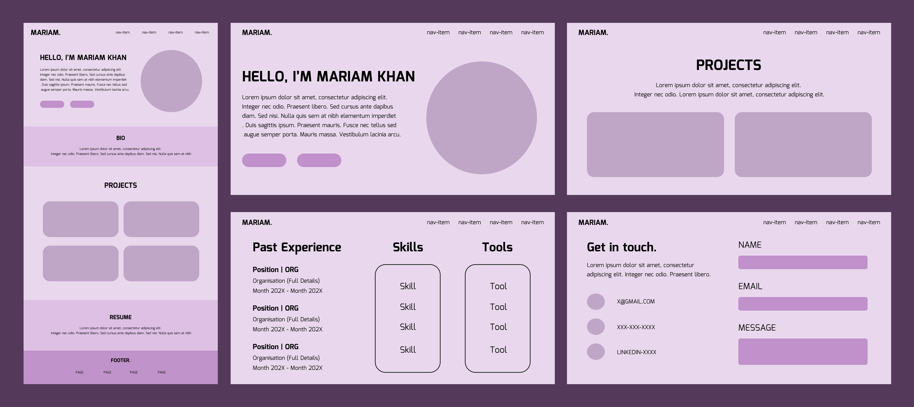
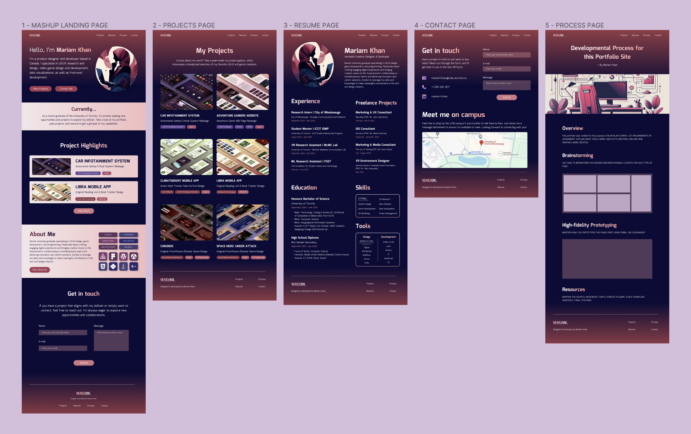
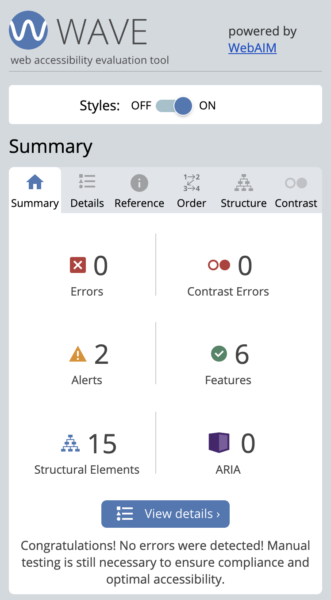

Overview
This portfolio was created as a project for CCT260H5, an introductory course in web development and design offered by the University of Toronto. The objective was to design and develop a custom portfolio website showcasing my professional experience using HTML and CSS. This site's development followed three main phases: planning, prototyping & programming, which are detailed below.
Planning
The first step I took was to create a checklist outlining the project requirements and necessary components for the site. Using these components as a guide, I began creating the Figma prototypes. Rather than spending too much time on initial wireframing, I quickly went from structuring the site to creating the high-fidelity mockups. The layout for each page gradually materialized as I worked on each page type individually. Below, you can see the overall structure of the pages that I first settled on.
Prototyping
When determining the layout and design for each page, I conducted research by looking at existing examples of similar page types through simple Google searches. I then added design elements inspired from the best examples I found. As depicted in the timelapse below, the prototype gradually took shape as each new page type was designed. The tools I used included Figma for prototyping, along with the Figma plugin Iconify for adding SVG icons. I also used Figma when creating the project preview images and the About section's summary image. For the project gallery's images, I copied Figma design frames from my old Figma projects and captured screenshots from my video game creations, which I then transformed into flattering isometric views by using the Figma plugin Fast Isometric. Additionally, I used Microsoft Designer's Image Creator tool to generate AI-images that I used for my profile and spotlight images. To view my Figma prototype, click here.
Programming
Having the high-fidelity prototype in Figma made converting the design into code much easier since all the values were already "set" within Figma. Figma's new Dev Mode also made the conversion easier as it allowed me to inspect specific elements and see their properties, which helped in writing their CSS. The Dev Mode's Measure tool was also helpful when setting margin and padding spaces since it allowed me to measure the pixel distance between different elements. Finally, Chrome's Inspect mode made it easier to debug code as I could see how my code affected specific elements. It also allowed me to compare how my site looked in the standard 1280px screen sizing required by the project, which was very important since my computer's screensize is much larger. Since this site was developed for the CCT260H5 course, I tried to primarily use the HTML and CSS concepts covered in classes. However, drawing from my background as a Computer Science minor and my recent enrollment in an online front-end development bootcamp offered by the e-learning platform called Scrimba, I also used additional concepts such as Block and Flex displays to improve the design. Any concepts not covered in these two courses were sourced from online sources like W3Schools, and these are documented in the code for reference.
Design Improvements
The final version of the site does not perfectly mirror the initial Figma design, as you can see below. There were many adjustments made to the final content and design to improve accessibility and add more visual appeal as I converted the design to code. For example, the original design of the project tags closely resembled buttons, so I modified their shape to be less rounder and changed their colors to distinguish them from actual buttons. Additionally, the contrast between the text and background color on the buttons was insufficient, so I changed the hue to a darker pink to improve readability. Another noticeable change is the profile picture, which was originally a closeup of an animated woman generated by AI to resemble me. I replaced it with a more professional image that emphasizes my tech background over physical appearance. I also introduced a new section titled "Hobbies" on the resume page since there was extra space in the left column after the Skill and Tool tables were coded. Finally, the appearance of the Contact forms underwent design improvements to look more visually appealing. Aside from the design changes, the code also underwent several iterations as I gained confidence with the concepts and tried to enhance my code's efficiency. For example, more div elements, classes, IDs, and standard HTML elements were added to further structure and organize the code. Using proper naming conventions also became especially important when I was asked to convert my originally five separate CSS stylesheets for each page into one single CSS stylesheet for code readability and consistency purposes. As I imported each separate stylesheet into the main stylesheet during the consolidation process, a lot of bugs and breaks occurred, which required me to refine certain class and ID names to be more unique and specific to prevent conflicts.
WCAG2.0 Accessibility
The site was designed with usability and accessibility principles in mind, adhering to best practices such as using strong contrast, maintaining a logical and well-organized structure using headings, providing descriptive alt text for images, ensuring clear differentiation between various elements, enhancing visibility of interactive elements through subtle animations, and integrating controls for videos. To conduct a more robust evaluation of this site's adherance to accessibility, I used the Web Accessibility Evaluation (WAVE) tool developed by WebAIM. The evaluation revealed that none of the pages showed any contrast errors, all images had appropriate alt text, forms were properly associated with their labels, and the page structure was correctly implemented using HTML elements. While some alerts were generated for missing video captions and many 'potential' heading isues, they weren't relevant to my site's specific context and layout.
External Resources
Below are the links for the resources and tools used to complete this project.
Google Fonts
Graphics
- Microsoft Designer Image Creator; used to generate AI-images.
- Profile Prompt: "professional woman hijabi silhouette, abstract, laptop pic, maroon pink navy blue tech theme"
- Process Spotlight Prompt: "An office with a computer, chair and desk, maroon pink navy blue tech theme"
- Figma Plugins
- Iconify; used for all iconography in site and images.
- Fast Isometric; used for project preview images.
Code
- W3Schools; helpful to understand elements used, new concepts commented in code.
- Scrimba; helpful for Flex and Block displays.
- CSS Gradient; used for gradient backgrounds and text.